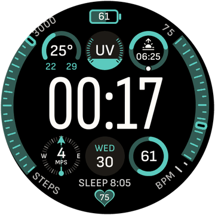
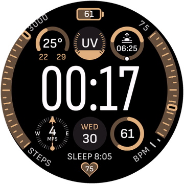

Репозиторий проектов пользователя ghsns для Zepp OS 3.x+
В РФ нужен VPN на телефоне — добавьте Zepp в список приложений VPN (раздельное туннелирование) или включите полный туннель, иначе приложение не достучится до Gemini.
Нужны свои ключи API:
Gemini и/или
Groq.
Подробнее — в README.
Чёрный экран настроек? Включите VPN и добавьте Zepp в список приложений (или полный туннель), затем перезапустите Zepp.


Профиль → Настройки → О программе.Профиль и откройте пункт «Режим разработчика».preview и установится на ваши часы без ошибок!